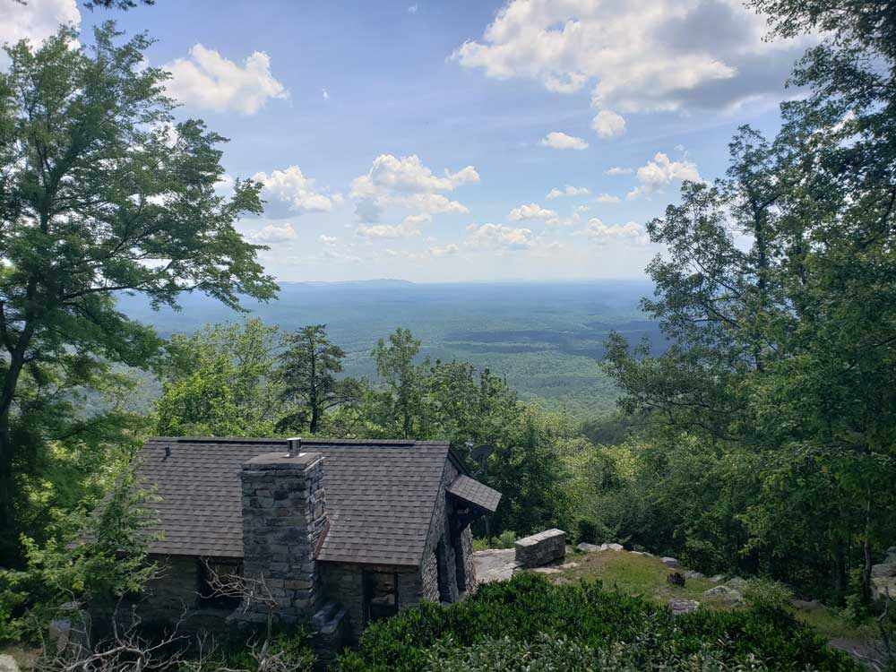
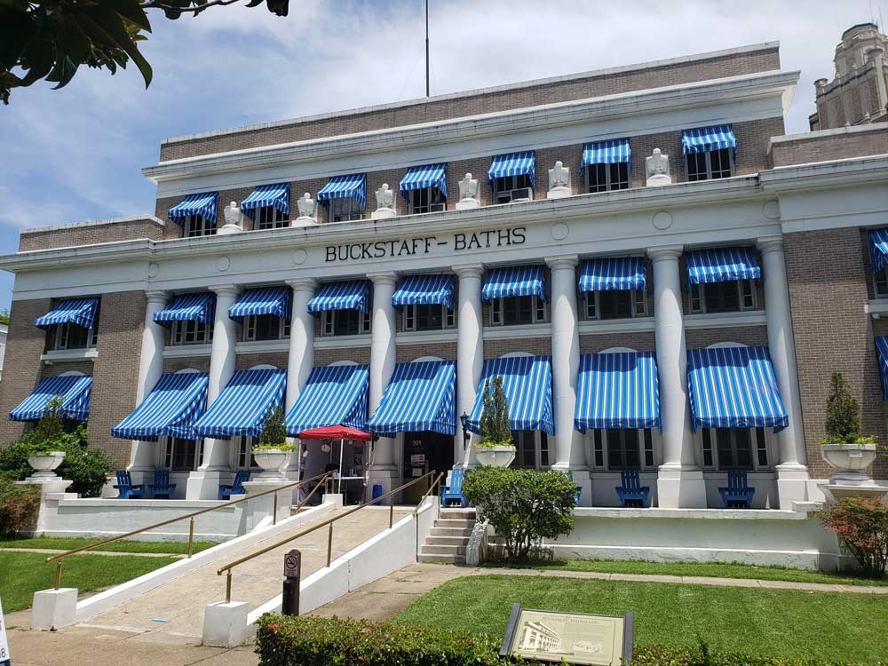
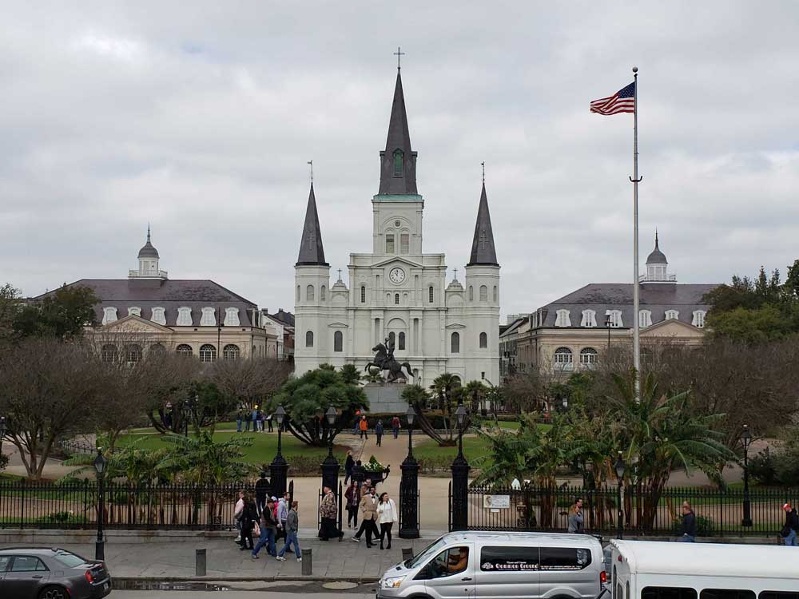
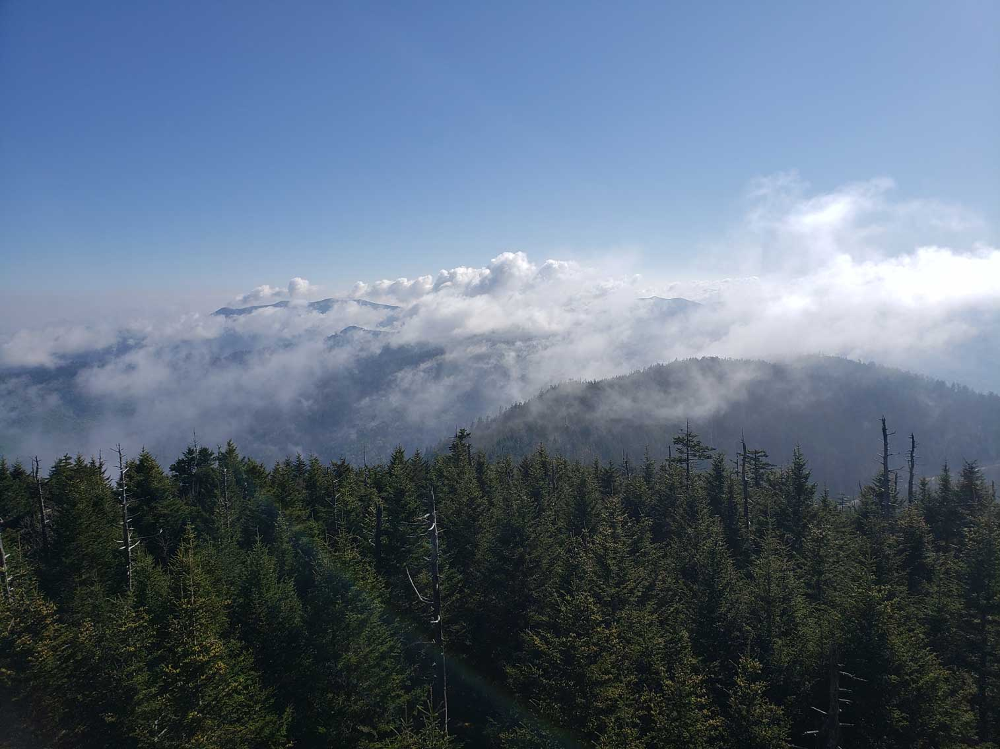

South Travel Guide
Feast on Southern cuisine, hear country music in Nashville and jazz in New Orleans, and explore Texas' plains and Kentucky's bluegrass hills.


.jpg){kind=link}

Cheaha State Park
Alabama
Discover Alabama's civil rights landmarks, Gulf Coast beaches, and charming small towns, from vibrant Birmingham to historic Mobile and scenic Cheaha State Park.

Buckstaff Bathhouse
Hot Springs National Park
Arkansas
Soak in natural hot springs, hike the Ozark Mountains, and explore charming towns amid the Arkansas Delta's rivers, lakes, and lush forested trails.

Mammoth Cave National Park Historic Entrance
Kentucky
Sip bourbon along Kentucky's famous trail, watch thoroughbreds run in Louisville, and explore rolling Bluegrass pastures and Appalachian foothills.

Jackson Square
New Orleans
Louisiana
Feast on Cajun cuisine, hear jazz in New Orleans' French Quarter, and explore Louisiana's bayous, swamps, and vibrant Mardi Gras culture.
Mississippi
Trace the blues' birthplace along Mississippi's Delta, explore historic Natchez mansions, and relax on Gulf Coast beaches near vibrant Jackson.

Wichita Mountains Wildlife Refuge
Oklahoma
Explore Native American heritage sites, roam the Great Plains, and discover Oklahoma City's museums amid rolling prairies and eastern forests.

Clingmans Dome
Great Smoky Mountains National Park
Tennessee
Hear country music echo through Nashville, blues in Memphis, and hike the misty Great Smoky Mountains amid Tennessee's rich musical heritage.
Texas
Explore vibrant Austin, historic San Antonio's Alamo, and Houston's space history, plus Texas' vast plains, canyons, and Gulf Coast beaches.
Overview
The American South is a region of remarkable diversity, where sprawling prairies, forested mountains, fertile river valleys, and vibrant cities create a landscape unlike any other in the United States. Stretching across Texas, Louisiana, Arkansas, Oklahoma, Alabama, Tennessee, and Kentucky, the region offers travelers an extraordinary blend of cultures shaped by Native American heritage, frontier history, European settlement, and African American traditions. Visitors can wander through the music-filled streets of Nashville and Memphis, experience the Cajun and Creole flavors of Louisiana, explore the Bluegrass country of Kentucky, or venture into the rugged beauty of the Ozarks and Ouachitas.
Nature is woven into daily life throughout the South. The region is home to vast national forests, scenic parkways, winding rivers, and diverse ecosystems that support abundant wildlife. Outdoor enthusiasts can paddle through cypress swamps, hike across Appalachian foothills, fish in legendary lakes and rivers, or marvel at the rolling grasslands and canyons of Texas and Oklahoma. Seasonal changes bring their own character, from spring wildflowers and summer festivals to brilliant autumn colors and mild winters that make many destinations enjoyable year-round.
Equally compelling is the South's enduring cultural identity. Music genres including country, blues, bluegrass, gospel, rockabilly, and western swing all have deep roots here, while the region's cuisine ranges from Texas barbecue and Nashville hot chicken to gumbo, jambalaya, fried catfish, and bourbon-inspired specialties. Historic towns, grand courthouses, Civil War sites, horse farms, rodeos, college traditions, and world-famous hospitality give travelers countless opportunities to connect with local communities. Whether seeking outdoor adventure, culinary experiences, music history, or small-town charm, visitors discover a region that celebrates its heritage while continuously evolving.
This article uses material from the Wikipedia articles covering the Southern United States and the states of Texas, Louisiana, Arkansas, Oklahoma, Alabama, Tennessee, and Kentucky, along with official tourism resources including Travel Texas, Explore Louisiana, Arkansas Tourism, Travel Oklahoma, Alabama Tourism, Tennessee Tourism, and Kentucky Tourism, which include content released under the Creative Commons Attribution-Share-Alike License 3.0.